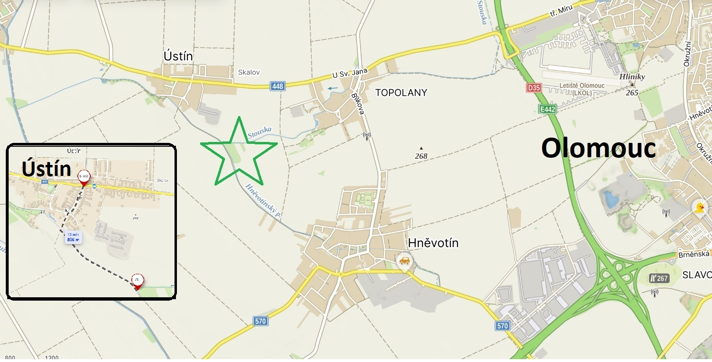
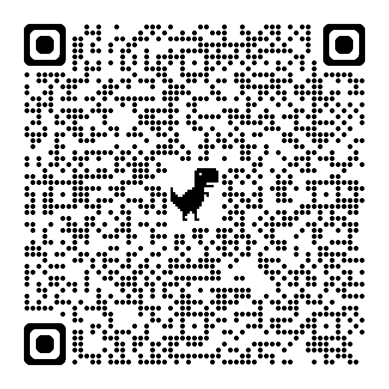

Kontakt
E-mail: mytopralesak@email.cz
Kde nás najdete
Nejpohodlnější cesta je z obce Ústín. CCa 300 m kostky a cca 550 m štěrková cesta, parkování na trávě přímo u Pralesáku. Prostě luxusní.

Naskenujte QR kód a navigace vás dovede přímo k Pralesáku.

Další kontaktní údaje a živou mapu doplníme po spuštění projektu.